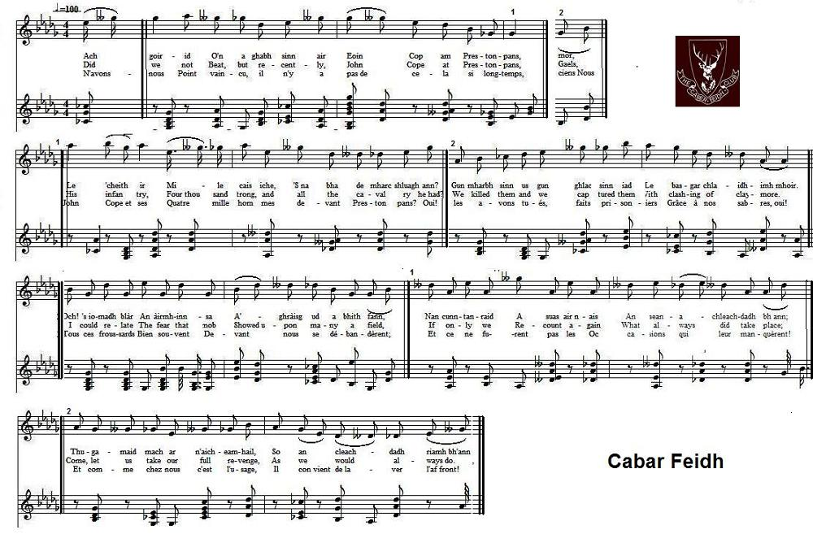
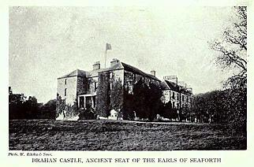

Moladh Chabair Fèidh
Praise of the "Deer's antlers" - Eloge des "Bois de cerf"
Clan McKENZIE and Alness Affair - Le clan McKENZIE et la bataille d'Alness (Oct. 1715)
by Tormod Ban Mac-Leoid (Norman McLeod) or Murdoch Matheson from Kintail (c.1670-c.1757)
As sung by Archie MacLean and recorded by James Ross in 1959|
Version Archie McLean
Version in G major |
Caper Fey
Jack Smith's Favourite |
Version in C major
The Copper Plate |
Rakish Paddy Version 1
Rakish Paddy Version 2 |
Diverse versions MIDI & MP3 of "Cabar Fèidh"
Sequenced by Christian Souchon
Source: Fiddler's Companion (see Links)

|
To the tune:
The tone background to this page is my transcription of the singing of Archie McLean (native of Perth, splendid voice!) recorded in January 1959 by James Ross. The record is in the collection of the School of Scottish Studies. Other particulars may be found at the following Internet address: www.tobarandualchais.co.uk/fullrecord/88417/1 The reel "Cabair Féidh" (Deer's Antlers), was first recorded in the Scottish musician David Young's "Drummond Castle MS" of 1734. It was first printed in 1768, in Robert Bremner's "Second Collection". All sorts of variations to the David Young original exist in Scotland, Ireland and Canada. To the lyrics The song has three main subjects: In "Sàr-Obair nam Bàrd Gaelach" the composer of the song is said to be Tormod Bàn MacLeòid (Norman McLeod) from Lochbroom (fl. 1716 - 1744). However, there is a view that the composer could have been Murdoch Matheson from Kintail (c. 1670 - c. 1757). In "Sar-Obair..." the song has eleven 16-line stanzas. The below three verses were found, along with an English translation in "Cabar Fèidh.pdf" by Largs Gaelic Choir, Tom Colquhoun http://largsgaelic.moonfruit.com/download/i/mark_dl/u/.../Cabar%20Feidh.pdf. The same tune is the vehicle for Alexander McDonald's "Fragment" |
A propos de la mélodie:
Le fond sonore de cette page est ma transcription du chant interprété par Archie McLean (natif de Perth, voix superbe!) et enregistré en janvier 1959 par James Ross. Cet enregistrement est conservé par la School of Scottish Studies . On trouvera d'autres détails à l'adresse: www.tobarandualchais.co.uk/fullrecord/88417/1 Le reel "Cabair Féidh" (Les bois du cerf) fut consigné pour la première fois dans le manuscrit "Drummond Castle MS" de 1734 du musicien écossais David Young. La première version imprimée se trouve dans la "Seconde Edition" du recueil de Robert Bremner de 1768. Plusieurs variantes de l'original de David Young existent en Ecosse, en Irlande et au Canada. A propos des paroles Les trois thèmes principaux du chant sont: Dans "Sàr-Obair nam Bàrd Gaelach", il est dit que ce chant fut composé par Tormod Bàn MacLeòid (Norman McLeod) de Lochbroom (actif: 1716 - 1744). Cependant, d'autres affirment que l'auteur pourrait être Murdoch Matheson de Kintail (c. 1670 - c. 1757). Dans "Sar-Obair..." le chant a onze strophes de 16 lignes. Les trois strophes ci-après et leur traduction anglaise sont tirées du texte "Cabar Fèidh.pdf" envoyé au "Largs Gaelic Choir" par Tom Colquhoun http://largsgaelic.moonfruit.com/download/i/mark_dl/u/.../Cabar%20Feidh.pdf. La même mélodie est utilisée par un autre chant jacobite: Le "Fragment" d'Alexandre McDonald |

|
THE HEALTH OF THE DEER'S ANTLERS [1]
1. Drink a health to the deer’s antlers here, That are joy and happiness: Although they are far from their own land, Son of God, hasten them to their country: Against my hanging and my torture, They are my armour that will not fail me: It pleases me that you will be rising With the mighty power of each friend As I saw you armed with guns, Expertly prepared and equipped To make the Munroes run, we did our business well, We gave the pleasure of the morning to them: O the Sutherlands did not go bravely, Their might left them through fear, Seeing on you the head of the deer When you raised up your antlers! 2. It was the foolish Laird of Fowlis When he started a war with you Munroes and Rosses As stupid as old men they were: Frasers and Grants, In camp they would not stay: And the Forbes were hurried off To the old house of Culloden! They all fled and there remained not A third of them: The Earl of Sutherland ran home Without firing his pistols: McKay escaped without being plundered When he called on his horse to be lively In taking the retreat, When you raised up your antlers! ... 11. The men of Moidart rose with you When you unfurled your banners, With the dark blue coloured sword blades. Unhurt were those who rode with them: McAlasdairs and McKinnons With their well equipped guns When they would go into the fray. It would have been surprising if they did not beat them: With you still taking joy. In the Brahan fortress. The clan of your father attends you Who would threaten to betray you? Wine will be drunk throughout your house. And whisky on tap. And many a pipe will be tuned. When your antlers will be raised up! [2] [3] [4] Source: Largs Gaelic Choir, Tom Colquhoun (http://largsgaelic.moonfruit.com/download/i/mark_dl/u/.../Cabar%20Feidh.pdf) |
DEOCH SLAINTE CHABAIR FEIDH SEO [1]
1. Deoch-slainte chabair féidh so Gur h-éibhinn 's gur h-aighearach; Ge fada bho thir fein e, Mhic Dhe greas g'a fhearann e; Mo chrochadh a's mo cheusadh, A's m' eideadh nar mheala mi, Mur ait learn thu bhi 'g eiridh Le treun neart gach caraide! Gur mise chunna' sibh gu gunnach, Ealamh, ullamh, acuinneach; Ruith nan Rothach 's math 'ur gnothach, Thug sibh sothadh maidne dhaibh; Cha deach' Cataich air an tapadh, Dh'fhag an neart le eagal iad, Ri faicinn ceann an fheidh ort 'Nuair dh'eirich do chabar ort! 2. Be'n t-amadan fear Foluis, 'Nuair thoisich e cogadh riut; Rothaich agus Rosaich - Bu ghorach na bodaich iad; Frisealaich a's Granndaich, An campa cha stadadh iad; 'S thug Foirbeisich nan teann-ruitb, Gu seann taigh Chuilodair orr'. Theich iad uile 's cha dh-fhuirich An treas duine 'bh'aca-san; An t-Iarla Catach ruith e dhachaigh Cha do las a dhagachan; Mac-Aoidh nan creach gun thar e is. 'S ann dh'eigh e 'n t-each a b'aigeannaich, Ri gabhal an ra-treuta, 'Nuair dh-eirich do chabar ort! ... 11. Dh'eireadh leat fir Mhuideirt, 'Nuair ruisgte do bhrataichean, Le 'n lannan daite du-ghorm, Gu'n ciuirte na marcaich leo; Mac- Alasdair 's Mac-Ionmhuinn, Le 'n cuilbheirean acuinneach; 'Nuair rachadh iad 'san iorghuill, Gu'm b' ioghna mur trodadh iad: Bi'dh tu fhathast gabhail aighear, Ann am Brathuinn bhaidealach, Bi'dh cinne t-athair ort a feitheamh, Co bhrathadh bagradh ort? Bi'dh fion ga chaitheamh feadh do thaighe, 'S nisge-beatha feadanach; 'S gur lionmhor piob' ga'n gleusadh, 'Nuair dh'eireas do chabar ort! [2] [3] [4] Source: "Sàr-Obair nam Bard Gaelach", pp. 359 - 361 |
A LA SANTE DES "BOIS DE CERF" [1]
1. Bois-de-Cerf, à la votre, Bonheur et félicité! Que Jésus vous accorde, De rentrer vite au foyer! Contre bourreaux et cordes, Mes fidèles protecteurs, Quand je vous vois prendre les armes Renaît en moi la vigueur! Je vous vis armés jusqu'aux dents, Mettant en fuite les Munro, Les pitoyables Sutherland, Qui n'oublieront pas de sitôt; La frousse qui les possédait: Ils s'imaginaient en enfer, Voyant vos insignes ornés De ces fameux Bois-de-cerf! 2. Fowlis, cet imbécile, A voulu s'en prendre à vous; Les Munro sont débiles Et les Ross sont de vieux fous; Vous avez vu leur faire Faux bond les Fraser et Grant; Quant aux Forbes, ils se hâtèrent De rejoindre Culloden. Tous ils ont fui. Il n'en resta Pas un tiers pour sauver l'honneur; Le comte de Sutherland n'a Pas pu faire feu, quel malheur! McKay de peur d'être plumé, Sur son cheval fut plus disert: "Battez en retraite, partez, Sinon, gare aux Bois-de-cerf!" ... 11. Ceux de Moidart se lèvent Quand se déploient vos drapeaux, D'aucun de ceux qui suivent L'épée n'effleura la peau; Qu'avec leurs forts calibres, McAlister, McKinnon, Fussent alors entrés enlice, N'en doutez point, nous vainquions! Vous retourniez le cœur en joie A votre château de Brahan, Fiers du succès qui vous échoie: C'est tout le clan qui vous attend! Et le vin va couler à flots, Le fût de whisky est ouvert. Les cornemuses chantent haut, En l'honneur des Bois-de-Cerf! [2] [3] [4] Trad. Christian Souchon (c) 2015 |
|
[1]
Cabar Féidh
(The Deer's antlers):
"This air celebrates the [McKenzies'] arms and crest [...] which consist of
a front view of the head and horns, whilst the Frasers, in their
Ceann an Féidh
, have a side view of the neck, head and horns of that portly animal the deer."
(Captain Fraser: "Airs and Melodies...").
[2] "Norman McLeod , the author of the foregoing popular clan song was a native of Assynt, Sutherlandshire, Little is known to us of his parentage except that he moved in the higher circles of his country, and upon his marriage, rented an extensive farm in his native parish. He had two sons whose status in society shows that he was in comfortable, if not affluent circumstances one of them was Professor Hugh McLeod of the University of Glasgow; and the other, the Rev. Angus McLeod, Minister of Rogart in the county of Sutherland. Both sons were men of considerable erudition and brilliant parts, and Angus's name is still mentioned in the North with feelings of kind- ness and respect. Norman McLeod lived long on a footing of intimate familiarity and friendship with Mr McKenzie of Ardloch whose farm was contiguous to that of our author..." This presentation of the composer of the lyrics, who is said to be also the composer of the music, in 'Sàr-Obair nam Bàrd Gaelach', is followed by an anecdote about the alleged origin of the poem: a "predatory excursion" of the Muroes of Achany, commissioned by the earl of Sutherland, on cattle belonging to Clan McKenzie. According to this source, the song was composed after 1745, since it states: " McLeod invoked the muse and composed "Cabar-Féidh," or the clan-song of the McKenzies making it the vehicle of invective and bitter sarcasm against the Sutherlanders and Munroes, who had antecedently made themselves sufficiently obnoxious to him by their adherence to the Hanoverian cause in 1745." (But the earliest record of the tune is David Young's MS of 1734). [3] This view is opposed at the "Tobar an Dualchais" site in a comment to the effect that there is in the song above: "a satirical account of the 'Alness affair' (October 1715) when Uilleam Dubh's Jacobite army dispersed the Whig army under the command of the Earl of Sutherland. According to the song, the Earl ran home." In the "Book of McKay" by Angus McKay, 1906, p.179, there is a divergent account of the same episode: "To prevent Seaforth from joining Mar as long as possible, and stop a rush to the south of the McKenzies, McDonalds of ClanRanald, McLeods of Lewis, McKinnons, McRaes, Frasers etc... before Argyle was ready to give battle, Sutherland set out for Tain with 400 men, where he found 500 McKays and 200 Rosses awaiting him. Though they were ill-trained and very badly equipped, they pushed on to Alness to delay the southward march of the McKenzies. At Alness they were joined by the Munroes and obtained possession of six small cannon. The forces under Sutherland numbered about 1800 men. Seaforth had been joined at Brahan Castle by 700 McDonalds and he set out for Alness with about 3000 men. Before they reached the latter place, Sutherland sped back to Tain and ferried his forces to the other side of Dornoch Firth. Seaforth made merry over this clever strategic retreat in the Gaelic song "Cabar Féidh" in praise of the McKenzies, though it was carried out without confusion or material loss (9th October 1715)." [4] Fowlis : the Chief of Clan Munro had his home in Fowlis (Ross-shire). Culloden was the historic seat of the chiefs of Clan Forbes. Men of Moidart : Clan McDonald of ClanRanald. The Braham fortress : Belonged to the Earls of Seaforth, chiefs of McKenzies. |
[1]
Cabair Féidh
(Les ramures du Cerf):
"Cet air célèbre le blason et l'insigne des [McKenzie] qui montre une vue de face, tête et bois tandis que les Fraser, avec leur
Ceann an Féidh
, présentent un profil, cou, tête et bois, du majestueux animal qu'est le cerf."
Captain Fraser: "Airs and Melodies..."
[2] "Norman McLeod , l'auteur du fameux chant de clan qui précède était originaire d'Assynt, dans le Sutherlandshire, On sait peu de choses sur ses origines, si ce n'est qu'il fréquentait l'élite de la société de son pays et qu'à son mariage, il devint le métayer d'une ferme importante de sa paroisse natale. Il eut deux fils dont le rang social montre que lui-même jouissait d'une fortune confortable, pour ne pas dire plus: l'un d'eux, Hugh McLeod fut professeur à l' Université de Glasgow; l'autre, le Rév. Angus McLeod, fut pasteur de Rogart, dans le comté de Sutherland. Tous deux étaient d'une érudition considérable érudition et de brillants partis et le nom d'Angus est encore prononcé dans le "Nord" avec émotion et respect. Norman McLeod fut longtemps l'ami intime de M. McKenzie d'Ardloch dont le ferme était contigüe à celle de cet auteur..." Cette présentation de l'auteur des paroles de ce chant, dont 'Sàr-Obair nam Bàrd Gaelach' affirme qu'il composa aussi la musique, est suivie d'une anecdote sur son origine prétendue: une "expédition de rapine" des Munro d'Achany, pour le compte du chef des Sutherland, visant à l'enlèvement de bétail appartenant au Clan McKenzie. Selon cette source, le chant fut composé après 1745, car elle affirme: " McLeod invoqua la muse et composa "Cabar-Féidh", ou "chant du Clan McKenzie" dont il fit un vecteur d'invectives et d'acerbes sarcasmes à l'encontre des Sutherland et des Munro, qui s'étaient, par le passé, déjà rendus odieux à ses yeux en se rangeant du côté des Hanovriens en 1745." (Mais la première mention de la mélodie se trouve dans le manuscrit de David Young de 1734). [3] Ce point de vue n'est pas celui que défend le site "Tobar an Dualchais" dans un commentaire qui présente le chant ci-dessus comme: "un récit satirique de la 'Rencontre d'Alness' (Octobre 1715) au cours de laquelle l'armée jacobite d'Uilleam Dubh dispersa l'armée whig commandée par le comte de Sutherland. Selon ce chant, le comte prit la fuite." Dans le "Livre des McKay" d'Angus McKay, 1906 , p.179, le même épisode est relaté de façon différente: "Pour retarder autant que possible la jonction de Seaforth et de Mar et empêcher le déferlement vers le sud des McKenzie, McDonald de ClanRanald, McLeod de Lewis, McKinnon, McRaes et autres Fraser, avant qu'Argyll soit prêt à livrer bataille, Sutherland partit pour Tain avec 400 hommes. Là l'attendaient 500 McKay et 200 Ross. Bien que mal entraînés et encore plus mal équipés, ils se portèrent sur Alness pour freiner la marche vers le sud des McKenzie. A Alness ils furent rejoints par des Munro et purent disposer de six petits canons. Les forces de Sutherland s'élevaient à environ 1800 hommes. Seaforth avait été rejoint à Brahan Castle par 700 McDonald et il se mit an route pour Alness avec environ 3000 hommes. Avant qu'ils n'atteignent leur objectif, Sutherland fit retraite vers Tain et fit traverser à ses troupes le fjord de Dornoch. Seaforth eut beau ironiser sur cette sage retraite stratégique dans le chant gaélique "Cabar Féidh", un chant de louange des McKenzie, il n'en reste pas moins qu'elle se déroula dans un ordre pafait et sans aucune perte matérielle (9 octobre 1715)." [4] Fowlis : le Chef des Munro avait sa résidence au château de Fowlis (Ross-shire). Culloden était le siège historique des chefs du Clan Forbes. Ceux de Moidart : le Clan McDonald de ClanRanald. La forteresse de Braham : appartenait aux Comtes de Seaforth, chefs des McKenzie. |

Barhan Castle, seat of McKenzies, demolished in 1950.